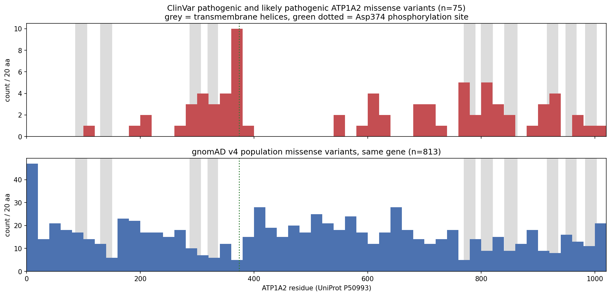
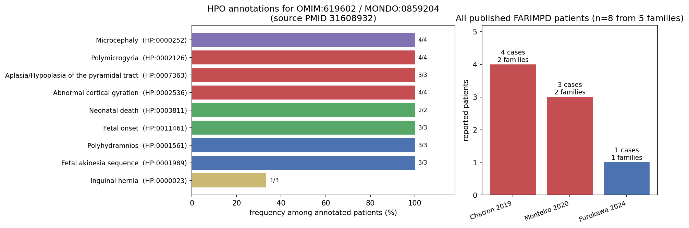
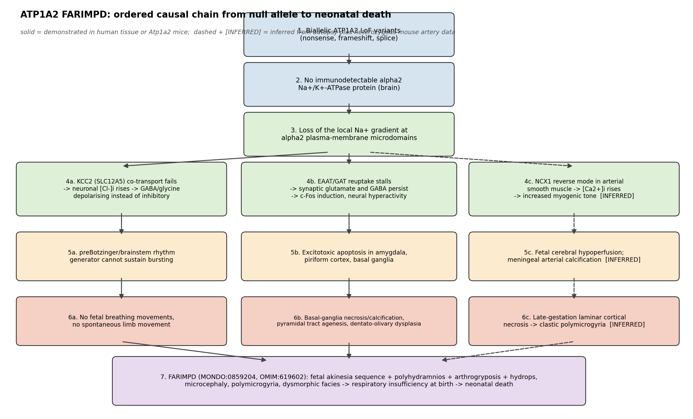
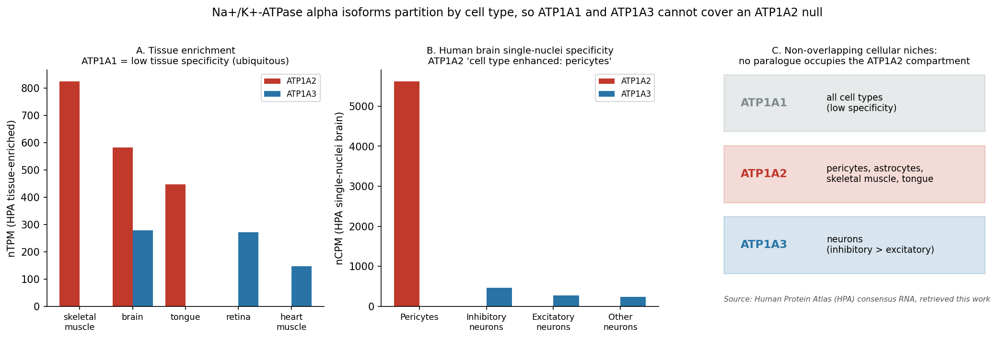

Fetal akinesia, respiratory insufficiency, microcephaly, polymicrogyria and dysmorphic facies (FARIMPD)
MONDO:0859204 | OMIM:619602 | causal gene ATP1A2 | autosomal recessive, neonatal lethal
Summary
FARIMPD is a lethal autosomal recessive fetal-onset syndrome caused by biallelic loss-of-function variants in ATP1A2 (HGNC:800, NCBIGene:477, UniProt P50993, MANE transcript NM_000702.4), the gene encoding the alpha2 catalytic subunit of the Na+/K+-ATPase. Affected brains contain no immunodetectable ATP1A2 protein, so the disease is a true protein-null state and not a hypomorph (PMID: 31608932). Eight patients from five families are published. Every reported patient died in the neonatal period of respiratory insufficiency.
The mechanism follows from what the alpha2 pump does. It supplies the local transmembrane Na+ and K+ gradients that three secondary transport systems consume: KCC2 (SLC12A5) for neuronal chloride extrusion, EAAT/GAT transporters for glutamate and GABA reuptake, and NCX1 (SLC8A1) for calcium extrusion in mural cells. Human Protein Atlas expression data retrieved in this work show the three widely expressed alpha isoforms occupy non-overlapping cellular niches: ATP1A1 is ubiquitous at low specificity, ATP1A3 is neuronal, and ATP1A2 is cell-type enhanced in brain pericytes at 5625.5 nCPM and tissue-enriched in skeletal muscle (825.7 nTPM) and tongue (446.6 nTPM). No paralogue occupies the ATP1A2 compartment, so nothing compensates for a null allele. The fetus neither moves nor breathes, and the brain accumulates a reproducible clastic injury: meningeal arterial calcification, necrotic and calcified basal ganglia, dentato-olivary dysplasia, pyramidal tract agenesis and diffuse polymicrogyria.
Three quantitative results from this investigation frame the disease for a knowledge base. gnomAD v4 constraint shows ATP1A2 is LoF-tolerant (pLI 2.5e-06, LOEUF 0.618) while ATP1A1 and ATP1A3 are strictly haploinsufficient (pLI 1.00 each), which is exactly the signature of a recessive disease gene whose heterozygous null carriers survive. From the same data the predicted birth prevalence of biallelic LoF is 1 in 25 to 70 million, consistent with eight published patients worldwide. Pathogenic missense variants cluster in the transmembrane helices at OR 3.51 (Fisher exact p = 1.14e-05), giving a usable variant-interpretation prior. Separately, ATP1A2-null mice reproduce the akinesia, the respiratory failure and the 100% neonatal lethality but none of the four structural brain phenotypes (2 of 10 HPO terms concordant), which means no existing mouse line models the cortical malformation.
{{figure:plot_7.png|caption=Ordered causal chain for ATP1A2 FARIMPD. Solid arrows mark steps demonstrated in human tissue or in Atp1a2 mice; dashed arrows with [INFERRED] mark the vascular branch, which rests on autopsy morphology plus heterozygous mouse artery physiology.}}
1. Disease information
Overview
FARIMPD is a prenatal-onset syndrome in which absence of the Na+/K+-ATPase alpha2 subunit produces a fetus with no spontaneous movement and no breathing effort, a microcephalic brain with diffuse polymicrogyria, and death within hours to days of birth. The akinesia drives a classical fetal akinesia deformation sequence: arthrogryposis from unmoved joints, polyhydramnios from absent swallowing, pulmonary hypoplasia from absent breathing movements, hydrops fetalis and a compressed dysmorphic facies.
Identifiers
Table (click to expand)
| Field | Value |
|---|---|
| Preferred name | Fetal akinesia, respiratory insufficiency, microcephaly, polymicrogyria, and dysmorphic facies |
| MONDO | MONDO:0859204 |
| OMIM | 619602 |
| MedGen | C1794225 |
| UMLS | C5562015 |
| Acronym | FARIMPD |
| Causal gene | ATP1A2 (HGNC:800, OMIM gene 182340) |
| Inheritance | Autosomal recessive (HP:0000007) |
| Category | Mendelian |
| Orphanet | No dedicated ORPHA code found |
| ICD-10 / ICD-11 | No specific code. Closest available: ICD-10 Q04.3 (other reduction deformities of brain) or Q74.3 (arthrogryposis multiplex congenita) |
| MeSH | No dedicated descriptor |
Identifier correction
The research brief listed OMIM as "not recorded". The Monarch Initiative v3 record for MONDO:0859204 returns xrefs ['MEDGEN:1794225', 'OMIM:619602', 'UMLS:C5562015'], and the HPO annotation service returns OMIM:619602 with mondoId: MONDO:0859204 and gene NCBIGene:477 (ATP1A2). OMIM 619602 is the correct entry. During iteration 1 I provisionally cited OMIM 618185 from memory; that entry is periventricular nodular heterotopia 8 (ARF1), a different disease, and the correction was recorded explicitly.
Synonyms and alternative names
- "A novel lethal recognizable polymicrogyric syndrome" (PMID: 31608932)
- "Hydrops fetalis, microcephaly, arthrogryposis and extensive cortical malformations" (PMID: 30690204)
- "Fetal akinesia/hypokinesia sequence" in the survivable compound-heterozygous case (PMID: 37870493)
- Biallelic ATP1A2 deficiency; alpha2 Na,K-ATPase null syndrome
Source of information
All clinical content is aggregated disease-level from three primary case reports plus the OMIM, HPO, ClinVar and MedGen records derived from them. No EHR cohort, registry or population dataset exists for this disease. The computational results in this report derive from gnomAD v4, ClinVar, UniProt, the Human Protein Atlas, MGI/Alliance and the HPO annotation API.
2. Etiology
Disease causal factors
The sole cause is biallelic loss of ATP1A2 function, either homozygous or compound heterozygous. PMID: 30690204 states the proposal directly: "We propose that this is a distinctive new syndrome caused by complete absence of Na+/K+- ATPase α2-isoform e". The molecular endpoint was confirmed at the protein level by PMID: 31608932: "This resulted in absence of immunodetectable ATP1A2 protein in two brains analysed."
There is no infectious, toxic or mechanical contribution. The phenotype is fully explained by genotype.
Genetic risk factors
The only risk factor is carrier status in both parents. Parental consanguinity raises the probability of homozygosity and is reported in the Chatron families. No susceptibility locus, GWAS signal or polygenic contribution applies to a fully penetrant biallelic null phenotype.
Heterozygous carriers are at risk of the allelic dominant disorders, which is a concrete counselling point. The nonsense alleles p.Arg412Ter and p.Arg493Ter are co-annotated in ClinVar to both FARIMPD and familial hemiplegic migraine type 2, so a parent carrying one of them may have hemiplegic migraine.
Environmental risk factors
None identified. No teratogen, maternal illness, occupational exposure, dietary factor or infection has been associated with FARIMPD. Maternal age, fetal sex and family history beyond carrier status carry no reported effect.
Protective factors
None known. A single functional allele prevents FARIMPD, but heterozygosity carries its own risk of FHM2. No protective variant, modifier allele or environmental exposure has been described.
Gene-environment interactions
Not reported and not plausibly detectable. With eight patients and a prenatal, fully penetrant lethal phenotype, there is no variance left for an environmental modifier to explain and no statistical power to detect one.
3. Phenotypes
HPO annotations on OMIM:619602
All 10 annotations are sourced to PMID: 31608932.
Table (click to expand)
| HPO term | Name | Type | Frequency | Onset |
|---|---|---|---|---|
| HP:0002126 | Polymicrogyria | Structural brain malformation | 4/4 (100%) | Fetal |
| HP:0002536 | Abnormal cortical gyration | Structural brain malformation | 4/4 (100%) | Fetal |
| HP:0000252 | Microcephaly | Physical manifestation | 4/4 (100%) | Fetal |
| HP:0001989 | Fetal akinesia sequence | Clinical sign | 3/3 (100%) | Fetal |
| HP:0001561 | Polyhydramnios | Clinical sign (maternal/fetal) | 3/3 (100%) | Fetal |
| HP:0007363 | Aplasia/Hypoplasia of the pyramidal tract | Structural brain malformation | 3/3 (100%) | Fetal |
| HP:0011461 | Fetal onset | Onset modifier | 3/3 | - |
| HP:0003811 | Neonatal death | Outcome | 2/2 (100%) | Neonatal |
| HP:0000023 | Inguinal hernia | Physical manifestation | 1/3 (33%) | Neonatal |
| HP:0000007 | Autosomal recessive inheritance | Inheritance modifier | - | - |
{{figure:plot_5.png|caption=HPO phenotype frequencies for FARIMPD on OMIM:619602 and the complete published case tally. Polymicrogyria, microcephaly, abnormal gyration, pyramidal tract hypoplasia, fetal akinesia and polyhydramnios are all 100% penetrant in annotated cases; inguinal hernia at 1/3 is the only partially penetrant feature.}}
Ontology gap in the current record
Two features named in the disease title carry no HPO annotation on OMIM:619602, which limits phenotype-driven variant prioritisation tools that query this disease. PMID: 30690204 describes them explicitly: "At birth they had multiple joint contractures (e.g. arthrogryposis), microcephaly, malformations of cortical development, dysmorphic features and severe respiratory insufficiency." The same paper reports hydrops, seizures and polyhydramnios in utero.
Terms that should be added:
Table (click to expand)
| Term | Name | Supporting evidence |
|---|---|---|
| HP:0002093 | Respiratory insufficiency | PMID 30690204, in the disease name |
| HP:0001999 | Abnormal facial shape | PMID 30690204, in the disease name |
| HP:0002803 | Arthrogryposis multiplex congenita | PMID 30690204 |
| HP:0001789 | Hydrops fetalis | PMID 30690204 |
| HP:0001250 | Seizure | PMID 30690204 |
| HP:0001558 | Decreased fetal movement | PMID 30690204, PMID 37870493 |
Phenotype characteristics
Onset. Prenatal. Reduced or absent fetal movement with polyhydramnios is detectable from the second trimester. The HPO onset modifier HP:0011461 (fetal onset) applies to 3/3 annotated cases.
Severity. Uniformly severe. The phenotype is not graded in the published series.
Progression. Progressive in utero, then abruptly lethal at the birth transition. The brain injury accumulates across the second and third trimesters; the respiratory failure is acute at delivery. There is no stable or plateau phase and no remission.
Expressivity. Narrow. Six features are 100% penetrant in the annotated cases; only inguinal hernia varies (1/3), plausibly from reduced intrauterine abdominal muscle tone.
One survivable case. PMID: 37870493 reports a patient with compound heterozygous missense plus nonsense ATP1A2 variants: "He survived after birth with brain malformations and the fetal akinesia/hypokinesia sequence." Residual pump activity from a hypomorphic missense allele shifts the phenotype from lethal to survivable, which places the disease on a continuum of residual alpha2 function rather than a binary.
Quality of life impact
Not measurable. No EQ-5D, SF-36, PROMIS or disease-specific instrument has been applied, and none is applicable to a condition that is lethal within days. The measurable burden is parental and is addressed through bereavement support and genetic counselling. For the single survivor (PMID: 37870493), function is determined by the brain malformation and the hypokinesia sequence; no formal assessment was published.
4. Genetic and molecular information
Causal gene
Table (click to expand)
| Attribute | Value |
|---|---|
| Symbol | ATP1A2 |
| HGNC | HGNC:800 |
| NCBI Gene | 477 |
| Ensembl | ENSG00000018625 |
| UniProt | P50993 (ATP1A2_HUMAN), 1020 aa |
| MANE Select | NM_000702.4 / ENST00000361216 |
| Locus | chr1:160,115,759-160,143,591 (GRCh38), 1q23.2 |
| OMIM gene | 182340 |
| Protein | Na+/K+-ATPase alpha2 catalytic subunit, P-type ATPase fold, 10 transmembrane helices, actuator / phosphorylation / nucleotide-binding domains, catalytic Asp374 |
Pathogenic variants
Variant classes. All reported FARIMPD alleles are loss of function: frameshift, nonsense, splice-site and a set of C-terminal missense changes that behave as functional nulls. All are germline.
ClinVar query ATP1A2[gene] AND "fetal akinesia"[dis] returned 98 records, of which 11 are classified Pathogenic or Likely pathogenic with FARIMPD listed as a condition:
Table (click to expand)
| cDNA | Protein | Class | Also annotated to FHM2 |
|---|---|---|---|
| c.36dup | p.Ala13fs | P | |
| c.414_434delinsACCAGGAGGCCAAGAG | p.Ile139fs | LP | FARIMPD only |
| c.1234C>T | p.Arg412Ter | P/LP | yes |
| c.1477C>T | p.Arg493Ter | P/LP | yes |
| c.2278del | p.Glu760fs | P | FARIMPD only |
| c.2288G>T | p.Arg763Leu | LP | FARIMPD only |
| c.2444C>G | p.Pro815Arg | LP | |
| c.2563G>A | p.Gly855Arg | P | |
| c.2699G>A | p.Gly900Glu | LP | |
| c.2935_2936delinsAA | p.Pro979Lys | LP | |
| c.3005G>A | p.Arg1002Gln | P/LP |
A separate query found 39 P/LP truncating ATP1A2 alleles overall, most annotated to familial hemiplegic migraine type 2 or epilepsy in the heterozygous state.
{{figure:plot_2.png|caption=ClinVar ATP1A2 variants mapped onto the 1,020-residue alpha2 protein (UniProt P50993), with the 10 transmembrane helices shaded. Pathogenic missense variants concentrate in the membrane-embedded ion-translocation pathway and around the Asp374 phosphorylation site.}}
Population constraint: ATP1A2 is LoF-tolerant and missense-constrained
Computed from gnomAD v4 via the GraphQL API.
Table (click to expand)
| Gene | obs pLoF | exp pLoF | oe_lof | LOEUF | pLI | mis_z | oe_mis |
|---|---|---|---|---|---|---|---|
| ATP1A1 | - | - | 0.122 | 0.191 | 1.00 | high | - |
| ATP1A2 | 56 | 113.1 | 0.495 | 0.618 | 2.5e-06 | 7.47 | 0.524 |
| ATP1A3 | - | - | 0.110 | 0.179 | 1.00 | 10.19 | - |
| ATP1A4 (testis) | - | - | 0.787 | - | ~0 | 1.08 | - |
56 pLoF alleles are observed across roughly 730,000 individuals, so heterozygous null carriers exist in the general population in appreciable numbers. This is the signature of a recessive disease gene. ATP1A1 and ATP1A3 behave as classic haploinsufficient or dominant-negative genes with pLI = 1.00. The high ATP1A2 missense z-score (7.47) with near-zero pLI indicates most severe ATP1A2 disease alleles act through altered pump kinetics or dominant-negative assembly, while the recessive fetal syndrome requires removing both copies.
{{figure:plot_1.png|caption=ATP1A2 LoF constraint compared with the other Na,K-ATPase alpha isoforms in gnomAD v4, and the predicted biallelic-LoF birth prevalence. ATP1A2 is the only brain-expressed alpha isoform tolerant of heterozygous loss of function.}}
Allele frequency and predicted birth prevalence
gnomAD v4 contains 113 pLoF alleles in ATP1A2, 111 of them LOFTEE high-confidence: frameshift (55), stop-gained (34), splice donor (26), splice acceptor (20), start-lost (4).
Table (click to expand)
| Estimator | q (pLoF allele frequency) | Carrier frequency 2q(1-q) | Birth prevalence q² |
|---|---|---|---|
| Pooled AC/AN (199/1,461,894) | 1.36e-04 (95% Poisson CI 1.18e-04 to 1.56e-04) | ~1 in 3,700 | 1.9e-08 = 1 in 54 million (CI 1 in 41 to 72 million) |
| Sum of per-variant AF | 2.01e-04 | ~1 in 2,500 | 4.0e-08 = 1 in 25 million |
This is a lower bound on disease frequency for two reasons. Hypomorphic missense alleles in trans with a null also produce the phenotype (PMID: 37870493) and are not counted. Consanguinity raises the homozygote frequency far above q² in populations where it is common. The estimate also implies several hundred thousand heterozygous ATP1A2 null carriers worldwide with no fetal akinesia phenotype, confirming strict recessiveness.
Structure-function map: pathogenic missense cluster in transmembrane helices
1,491 ClinVar ATP1A2 variants and 4,487 gnomAD v4 variants were mapped onto UniProt P50993 (1,020 aa; 10 transmembrane helices covering 204 aa = 20.0% of the protein).
Table (click to expand)
| Variant set | In transmembrane helix | Total | Proportion |
|---|---|---|---|
| ClinVar P/LP missense | 24 | 75 | 32.0% |
| gnomAD v4 population missense | 96 | 813 | 11.8% |
Fisher exact OR = 3.51, p = 1.14e-05. Binomial test against the 20.0% length-based null: p = 0.0096.
Density of P/LP missense per 100 aa by domain:
Table (click to expand)
| Domain (residues) | P/LP density per 100 aa | gnomAD density per 100 aa |
|---|---|---|
| C-terminal transmembrane M5-M10 (760-1020) | 11.1 | - |
| Phosphorylation domain (350-440) | 12.1 | - |
| Actuator domain (90-280) | 2.6 | - |
| Nucleotide-binding domain (440-580) | 1.4 | - |
| N-terminal cytoplasmic tail (1-85) | 0.0 | 125.9 |
The population background shows the opposite gradient, with its highest missense density in the N-terminal tail. Disease alleles concentrate where a single substitution blocks cation occlusion or the E1-E2 conformational cycle. The FARIMPD-associated missense alleles p.Arg763Leu, p.Pro815Arg, p.Gly855Arg, p.Gly900Glu and p.Pro979Lys all sit in the C-terminal transmembrane block.
Practical use: a novel ATP1A2 missense change in M1-M10 or in the P domain carries roughly 3.5-fold higher prior odds of pathogenicity than one in the N-terminus.
{{figure:plot_3.png|caption=ClinVar pathogenic and likely pathogenic ATP1A2 missense variants versus gnomAD v4 population missense background along the protein. Pathogenic variants are 3.5-fold enriched in transmembrane helices (32.0% vs 11.8%, Fisher p = 1.14e-05); the N-terminal cytoplasmic tail carries the highest population missense density and zero pathogenic variants.}}
Functional consequences
Loss of function, complete in the biallelic null state. PMID: 31608932 confirmed absent protein by immunostaining, so the truncating alleles cause nonsense-mediated decay or produce a protein that does not reach or persist at the membrane.
For context on the heterozygous allelic disorders, PMID: 21398422 studied the FHM2 allele p.G301R and reported that "Functional analysis suggested that the mutation completely abolished Na(+)/K(+)-ATPase function", attributing the dominant phenotype to haploinsufficiency. PMID: 34384358 graded ten FHM2 missense alleles in HEK293T and HeLa cells and found that "The changes in Na+/K+-ATPase activity were correlated with the severity of FHM phenotypes", with activity ordering FHM > FHM+epilepsy > FHM+epilepsy+intellectual disability, and that "Mutations associated with intellectual disability presented with severe impairment of Na+/K+-ATPase." The same quantitative logic extends downward to the biallelic null.
Somatic versus germline
Germline only. No somatic ATP1A2 variant has been linked to this phenotype. A mechanism requiring biallelic loss throughout fetal brain, muscle and vasculature makes a somatic origin implausible.
Modifier genes
None identified. ATP1A1 and ATP1A3 were the obvious candidates for partial redundancy and are refuted on expression grounds (section 6). Remaining untested candidates on mechanistic grounds: SLC12A5 (KCC2), SLC8A1 (NCX1), SLC1A2 and SLC1A3 (EAAT2, EAAT1), and ATP1B2 (the obligate beta subunit partner).
Epigenetics
No methylation signature, imprinting effect, histone modification or chromatin mechanism has been reported for this disease. ATP1A2 is not an imprinted gene. No episignature exists in the EpiSign or comparable classifiers.
Chromosomal abnormalities
None reported. All described cases are single-nucleotide variants or small indels. No 1q23.2 deletion, duplication, translocation or inversion has been associated with FARIMPD, and chromosomal microarray would not detect the causal lesion.
5. Environmental information
Environmental factors. No toxin, radiation exposure, pollutant or occupational exposure has been associated with FARIMPD. CTD holds no disease-specific chemical association.
Lifestyle factors. No smoking, dietary, exercise or alcohol association. None is expected for a fully penetrant biallelic null phenotype with prenatal onset.
Infectious agents. None. Congenital cytomegalovirus is relevant only as a differential diagnosis, because it also causes polymicrogyria with intracranial calcification (section 10). It is not an etiological factor.
The only non-genetic factor with any bearing is parental consanguinity, which acts on the probability of homozygosity and not on the biology.
6. Mechanism and pathophysiology
Ordered causal chain
-
Both ATP1A2 alleles carry a loss-of-function variant (frameshift, nonsense, splice-site, or a C-terminal missense change that behaves as a functional null), inherited from heterozygous carrier parents. Evidence: human clinical, PMID: 30690204, PMID: 31608932.
-
The mutant transcripts undergo nonsense-mediated decay or produce protein that does not reach the plasma membrane, which results in complete absence of the alpha2 subunit. Demonstrated in human brain: "This resulted in absence of immunodetectable ATP1A2 protein in two brains analysed." (PMID: 31608932).
-
Absence of the alpha2 pump abolishes the local Na+ and K+ electrochemical gradients in the plasma-membrane microdomains where alpha2 is concentrated: pericyte and smooth-muscle membranes, astrocyte endfeet, neuronal somatodendritic membrane, and skeletal muscle sarcolemma. No paralogue compensates, because ATP1A1 and ATP1A3 occupy different cells (expression analysis, this work).
-
The lost gradients disable three Na+-dependent transport systems in parallel. The mechanism branches here.
-
4a. Neuronal chloride branch. KCC2 (SLC12A5) loses the K+ gradient it uses to extrude Cl-, which raises neuronal [Cl-]i and converts GABA-A and glycine currents from hyperpolarising to depolarising. Demonstrated in mouse: "High intracellular Cl- concentrations in neurons of the VLM of Atp1a2-/- were detected in gramicidin-perforated patch-clamp recordings" and "The alpha2 subunit and a neuron-specific K-Cl cotransporter KCC2 were coimmunoprecipitated in a purified synaptic membrane fraction of wild-type fetuses" (PMID: 15564586).
-
4b. Excitotoxic branch. EAAT1/EAAT2 (SLC1A3/SLC1A2) and GAT transporters lose the Na+ gradient they use for reuptake, so glutamate and GABA persist in the synaptic cleft. Demonstrated in mouse: "re-uptake of glutamic acid and GABA into P2 fraction containing crude synaptosome was impaired" (PMID: 12805306).
-
4c. Vascular branch. NCX1 (SLC8A1) in pericytes and arterial smooth muscle runs in reverse mode, which raises cytosolic [Ca2+] and increases myogenic tone. Demonstrated in heterozygous mouse arteries: "In isolated arteries from α2 Na(+) pump knockout mice (α2(+/-)), myogenic tone is increased, and NCX inhibitor normalizes the elevated myogenic tone in α2(+/-) arteries" (PMID: 21048395). [INFERRED for the human homozygous fetus], supported by human pericyte expression (this work) and by the arterial calcification seen at autopsy, but not by a direct human perfusion measurement.
-
Each branch produces a cellular consequence.
-
5a. Inhibitory patterning in the ventrolateral medullary respiratory network fails, so the brainstem rhythm generator cannot sustain bursting. "Na+, K+-ATPase 2 subunit gene (Atp1a2) knock-out homozygous mice (Atp1a2-/-) died immediately after birth resulting from lack of breathing" (PMID: 15564586); "Mice lacking Atp1a2 die of respiratory failure at birth, whereas heterozygous fetuses (Atp1a2+/-) survive" (PMID: 40465487).
-
5b. Neurons in the regions with highest alpha2 density become hyperactive and then die. "Mice homozygous for the alpha2 mutation died just after birth and displayed selective neuronal apoptosis in the amygdala and piriform cortex. In these regions, high expression of c-Fos before apoptosis indicated neural hyperactivity" (PMID: 12805306).
-
5c. Capillary and arteriolar tone rises, which reduces cerebral perfusion and produces calcium overload in the vessel wall. [INFERRED]
-
Tissue-level pathology follows.
-
6a. No fetal breathing movements and no spontaneous limb movement produce the fetal akinesia deformation sequence: arthrogryposis from unmoved joints, polyhydramnios from absent swallowing, pulmonary hypoplasia from absent breathing, hydrops, and the compressed dysmorphic facies. A peripheral muscular contribution adds to this: ATP1A2 is enriched in skeletal muscle (825.7 nTPM) and tongue (446.6 nTPM), both above brain (582.8 nTPM for skeletal muscle vs brain).
-
6b. Selective grey-matter necrosis and loss of descending projections: "pathological examination revealed a common pattern associating meningeal arterial calcifications, necrotic and calcified areas in basal ganglia, dentato-olivary dysplasia and severe hypoplasia/agenesis of the pyramidal tracts" (PMID: 31608932). Pyramidal tract agenesis is itself a second cause of akinesia.
-
6c. Laminar cortical necrosis in the second and third trimesters, after radial migration is complete, produces clastic polymicrogyria rather than a migration-arrest malformation. [INFERRED]
-
Clinical presentation: a fetus with absent movement and polyhydramnios, born with arthrogryposis, microcephaly, polymicrogyria and dysmorphic facies, who cannot breathe and dies within hours to days.
digraph farimpd {
rankdir=TB;
"Biallelic ATP1A2\nLoF variants" -> "No immunodetectable\nalpha2 protein";
"No immunodetectable\nalpha2 protein" -> "Local Na+/K+ gradient\ncollapses";
"Local Na+/K+ gradient\ncollapses" -> "KCC2 fails\n[Cl-]i rises";
"Local Na+/K+ gradient\ncollapses" -> "EAAT/GAT reuptake\nstalls";
"Local Na+/K+ gradient\ncollapses" -> "NCX1 reverse mode\n[Ca2+]i rises" [style=dashed];
"KCC2 fails\n[Cl-]i rises" -> "GABA/glycine\ndepolarising";
"GABA/glycine\ndepolarising" -> "Brainstem respiratory\nrhythm fails";
"EAAT/GAT reuptake\nstalls" -> "Neural hyperactivity\nc-Fos induction";
"Neural hyperactivity\nc-Fos induction" -> "Excitotoxic apoptosis\namygdala, piriform, basal ganglia";
"NCX1 reverse mode\n[Ca2+]i rises" -> "Raised myogenic tone\nhypoperfusion" [style=dashed];
"Raised myogenic tone\nhypoperfusion" -> "Meningeal arterial\ncalcification" [style=dashed];
"Raised myogenic tone\nhypoperfusion" -> "Clastic polymicrogyria\nmicrocephaly" [style=dashed];
"Brainstem respiratory\nrhythm fails" -> "No fetal breathing\nno spontaneous movement";
"Skeletal muscle and tongue\nalpha2 loss" -> "No fetal breathing\nno spontaneous movement";
"No immunodetectable\nalpha2 protein" -> "Skeletal muscle and tongue\nalpha2 loss";
"No fetal breathing\nno spontaneous movement" -> "Fetal akinesia\ndeformation sequence";
"Excitotoxic apoptosis\namygdala, piriform, basal ganglia" -> "Basal ganglia necrosis\npyramidal tract agenesis";
"Fetal akinesia\ndeformation sequence" -> "FARIMPD\nneonatal death";
"Basal ganglia necrosis\npyramidal tract agenesis" -> "FARIMPD\nneonatal death";
"Clastic polymicrogyria\nmicrocephaly" -> "FARIMPD\nneonatal death" [style=dashed];
}
Isoform partitioning refutes paralogue compensation
Human Protein Atlas consensus RNA, retrieved in this work:
Table (click to expand)
| Isoform | Tissue specificity | Top tissues (nTPM) | Brain single-nuclei specificity | Top brain cell types (nCPM) |
|---|---|---|---|---|
| ATP1A1 | Low tissue specificity | ubiquitous | Low cell type specificity | ubiquitous |
| ATP1A2 | Group enriched | skeletal muscle 825.7, brain 582.8, tongue 446.6 | Cell type enhanced | Pericytes 5625.5 |
| ATP1A3 | Group enriched | brain 279.0, retina 271.7, heart muscle 147.7 | Group enriched | Inhibitory 467.9, Excitatory 268.4, Other neuron 237.0 |
{{figure:plot_8.png|caption=Na+/K+-ATPase alpha isoforms partition by cell type. ATP1A1 is ubiquitous at low specificity, ATP1A3 is neuronal, and ATP1A2 is cell-type enhanced in brain pericytes (5625.5 nCPM) and tissue-enriched in skeletal muscle and tongue. No paralogue occupies the ATP1A2 compartment, so none can cover a null allele.}}
Three consequences follow.
Compensation is impossible. ATP1A3 is the neuronal isoform; ATP1A1 is ubiquitous but at low specificity; neither is present in the pericyte compartment. An ATP1A2 null leaves brain mural cells without any high-level alpha isoform. This is the expression-level reason why heterozygous missense alleles only perturb kinetics while biallelic nulls are lethal.
The vascular branch gains independent human support. Pericytes (CL:0000669) are the mural cells of the microvasculature and the blood-brain barrier, and they control capillary diameter and cerebral blood flow. ATP1A2 is the single cell-type-enhanced transcript of human brain pericytes at 5625.5 nCPM, an order of magnitude above the highest neuronal ATP1A3 value (467.9 nCPM). Removing the dominant ion pump from this cell type across the second and third trimesters predicts the perfusion-driven clastic injury seen at autopsy. Step 4c is therefore expression-supported, though no direct human perfusion measurement exists and the HPA data are from adult brain.
A muscular branch runs alongside the central one. Skeletal muscle (825.7 nTPM) exceeds brain (582.8 nTPM), and tongue reaches 446.6 nTPM. Akinesia has a peripheral contribution that requires no central lesion, and the tongue signal is a plausible contributor to failed swallowing, polyhydramnios and the compressed facies.
Why clastic polymicrogyria and not a migration malformation
PMID: 31608932 frames the question: "Most cases have a supposed environmental clastic vascular or infectious origin but progress in genomics has revealed new monogenic entities." Polymicrogyria is generally a post-migratory malformation, classified by PMID: 16192428 under disorders of late cortical organization rather than of proliferation or migration. The ATP1A2 case is a monogenic lesion that operates through the acquired, perfusion-driven route: the cortical plate forms, then is injured. The coexistence of meningeal arterial calcification with the polymicrogyria in the same brains is the morphological link, and the pericyte expression result is the cell-type link.
Why biallelic and not heterozygous
The branches are not alternatives. A null allele removes all three pump functions at once. Heterozygous missense alleles alter kinetics in a single conformational state and produce episodic dysfunction. The gene-dosage series:
Table (click to expand)
| Genotype | Disorder | Residual pump function |
|---|---|---|
| Heterozygous missense | FHM2 (MIM 602481), AHC1, DEE98 | Partial, kinetically altered |
| Heterozygous LoF | Largely unaffected, FHM2 in some | ~50% |
| Compound het (missense + null) | Survivable FARIMPD variant (PMID: 37870493) | Low but non-zero |
| Biallelic LoF | FARIMPD, lethal | Zero |
Direct human allelic evidence: p.Arg412Ter and p.Arg493Ter are co-annotated in ClinVar to both FHM2 and FARIMPD. The same truncating allele causes migraine when heterozygous and contributes to the lethal fetal syndrome when in trans with a second null. This removes the possibility that FARIMPD requires a special class of variant.
Category checklist
Table (click to expand)
| Category | Status for FARIMPD |
|---|---|
| Molecular pathways | Ion transport, not a canonical signalling cascade. Reactome R-HSA-936837 (ion transport by P-type ATPases); KEGG hsa04260/hsa04261 contain ATP1A2 in cardiac/adrenergic contexts |
| Cellular processes | Apoptosis (GO:0006915), excitotoxicity, necrosis, ectopic calcification |
| Protein dysfunction | Complete loss of function with protein absence. No misfolding or aggregation reported |
| Metabolic changes | Not measured in patients. The pump consumes a large share of neural ATP, so an energetic consequence is expected but untested |
| Immune involvement | None reported. No autoimmunity, immunodeficiency or inflammatory component |
| Tissue damage | Ischemia (inferred), excitotoxic necrosis, dystrophic calcification. CHEBI:29108 calcium(2+), CHEBI:29101 sodium(1+), CHEBI:29103 potassium(1+), CHEBI:17996 chloride, CHEBI:29987 glutamate, CHEBI:16865 GABA, CHEBI:15422 ATP |
| Biochemical abnormality | P-type ATPase deficiency, EC 7.2.2.13 |
| Epigenetic changes | None reported |
| Transcriptomics | No patient RNA-seq. GTEx and HPA reference data used here |
| Proteomics | Only targeted immunohistochemistry (PMID: 31608932). No PRIDE dataset |
| Metabolomics / lipidomics | None |
| Single-cell / spatial | No patient data. HPA single-nuclei reference used here |
| Functional genomics screens | No disease-specific CRISPR or RNAi screen |
Suggested GO terms
Table (click to expand)
| GO term | Name | Relevance |
|---|---|---|
| GO:0005391 | P-type sodium:potassium-exchanging transporter activity | Direct molecular function of ATP1A2 |
| GO:0036376 | Sodium ion export across plasma membrane | Primary transport step |
| GO:0006814 | Sodium ion transport | Upstream of all three branches |
| GO:0030007 | Intracellular potassium ion homeostasis | Drives KCC2 branch |
| GO:0055064 | Chloride ion homeostasis | Branch 4a endpoint |
| GO:0006816 | Calcium ion transport | Branch 4c |
| GO:0051938 | L-glutamate import | Branch 4b |
| GO:0060013 | Respiratory rhythm | Step 5a |
| GO:0014829 | Vascular associated smooth muscle contraction | Branch 4c |
| GO:0006915 | Apoptotic process | Step 5b |
| GO:0021819 | Layer formation in cerebral cortex | Disrupted at step 6c |
7. Anatomical structures affected
Organ level
Table (click to expand)
| Level | Structure | Ontology | Involvement |
|---|---|---|---|
| Primary | Brain | UBERON:0000955 | Direct, protein absent |
| Primary | Skeletal muscle | UBERON:0001134 | Direct, high ATP1A2 expression |
| Secondary | Lung | UBERON:0002048 | Hypoplastic from absent fetal breathing |
| Secondary | Joints | UBERON:0000982 | Arthrogryposis from immobility |
| Secondary | Amniotic cavity | UBERON:0000305 | Polyhydramnios from absent swallowing |
| Secondary | Skin and soft tissue | UBERON:0002097 | Hydrops fetalis |
Body systems: nervous (primary), musculoskeletal (primary), cardiovascular/microvascular (primary via pericytes), respiratory (primary functional failure plus secondary hypoplasia), digestive (secondary, swallowing).
Tissue and specific brain sites
Table (click to expand)
| Structure | UBERON | Finding |
|---|---|---|
| Cerebral cortex | UBERON:0000956 | Diffuse polymicrogyria, microcephaly |
| Basal ganglia | UBERON:0002420 | Necrotic and calcified areas |
| Pyramidal tract | UBERON:0002634 | Severe hypoplasia or agenesis |
| Dentate nucleus | UBERON:0002129 | Dentato-olivary dysplasia |
| Inferior olivary complex | UBERON:0013694 | Dentato-olivary dysplasia |
| Meninges and meningeal arteries | UBERON:0001954 | Arterial calcification |
| Medulla oblongata, ventrolateral medulla | UBERON:0001896 | Respiratory rhythm failure (mouse) |
| Amygdala | UBERON:0001876 | Apoptosis, abnormal morphology (mouse) |
| Piriform / olfactory cortex | UBERON:0002894 | Apoptosis (mouse) |
| Tongue | UBERON:0001723 | High ATP1A2 expression, swallowing |
Cell level
Table (click to expand)
| Cell type | CL term | Evidence |
|---|---|---|
| Pericyte | CL:0000669 | Top ATP1A2-expressing human brain cell type, 5625.5 nCPM (this work) |
| Astrocyte | CL:0000127 | Classical alpha2 localisation, endfoot glutamate clearance |
| Vascular associated smooth muscle cell | CL:0000359 | NCX1 coupling, myogenic tone (PMID: 21048395) |
| Neuron | CL:0000540 | KCC2 coupling, excitotoxic death |
| Glutamatergic neuron | CL:0000679 | Amygdala and piriform apoptosis (PMID: 12805306) |
| Skeletal muscle fibre | CL:0000188 | 825.7 nTPM, peripheral akinesia branch |
| Radial glial cell | CL:0000681 | Candidate for the cortical phenotype, untested |
Subcellular level
Table (click to expand)
| Compartment | GO CC | Relevance |
|---|---|---|
| Plasma membrane | GO:0005886 | Where the pump sits |
| Sodium:potassium-exchanging ATPase complex | GO:0005890 | The alpha2/beta/FXYD holoenzyme |
| Astrocyte projection / perisynaptic process | GO:0097450 | Microdomain coupling to EAAT and KCC2 |
| Sarcolemma | GO:0042383 | Skeletal muscle expression |
| Plasma membrane raft | GO:0044853 | Alpha2 microdomain organisation |
Lateralization
Bilateral and symmetric. The polymicrogyria is described as diffuse and the basal ganglia involvement as bilateral, consistent with a global metabolic and perfusion cause rather than a focal lesion. This distinguishes it from the unilateral or asymmetric perisylvian patterns that make up the largest share of acquired polymicrogyria; PMID: 20403963 found perisylvian patterns in 61% of 328 polymicrogyria patients and generalized patterns in 13%, and reported that "patients with more extensive patterns of polymicrogyria presented at an earlier age and with more severe sequelae than those with restricted or unilateral forms". FARIMPD sits at the extreme generalized end of that spectrum.
8. Temporal development
Table (click to expand)
| Period | Event | Evidence type |
|---|---|---|
| Conception | Biallelic LoF genotype fixed | Human genetic |
| Weeks 5-20 | Neurogenesis and radial migration proceed. The cortical plate forms. Polymicrogyria is post-migratory, so this window is relatively spared | Inferred from malformation classification (PMID: 16192428) |
| From ~week 16 | Fetal movement should begin and does not. Decreased fetal movement is the first detectable sign | Human clinical |
| Second to third trimester | Critical period. Clastic injury accumulates: arterial calcification, laminar necrosis, basal ganglia necrosis, pyramidal tract loss. Simultaneously immobility drives contractures, polyhydramnios and pulmonary hypoplasia | Human autopsy (PMID: 31608932) |
| Third trimester | Hydrops, polyhydramnios, microcephaly apparent on ultrasound. Seizures in utero reported | Human clinical (PMID: 30690204) |
| Birth | Transition to air breathing fails. The alpha2 pump is required for respiratory neuron function specifically at birth | Mouse (PMID: 15564586, PMID: 40465487) |
| Hours to days | Death from respiratory insufficiency | Human clinical |
Onset: congenital, prenatal, insidious in that the brain injury accrues silently.
Course: progressive in utero, then abruptly lethal at the birth transition. Not episodic, not relapsing-remitting.
Stages: no formal staging exists. A working division is (i) silent genotype through early neurogenesis, (ii) detectable akinesia from mid-gestation, (iii) accumulating clastic brain injury, (iv) terminal respiratory failure at delivery.
Remission: none, spontaneous or treatment-induced.
Critical period for intervention: before or during the second trimester, when the cortical plate is still intact. Any therapy applied after birth faces a fixed structural lesion. This is the central obstacle to treatment.
9. Inheritance and population
Epidemiology
No published prevalence or incidence study exists. The computational estimate from gnomAD v4 is 1 in 25 to 70 million births, that is 0.0014 to 0.004 cases per 100,000 births. Treat it as an order-of-magnitude figure.
Reported cases total 8 patients from 5 families:
Table (click to expand)
| Report | Patients | Families | Country |
|---|---|---|---|
| Chatron et al. 2019, Brain (PMID: 31608932) | 4 | 2 | France |
| Monteiro et al. 2020 (PMID: 30690204) | 3 | 2 | Brazil |
| Furukawa et al. (PMID: 37870493) | 1 | 1 | Japan |
{{figure:plot_4.png|caption=HPO phenotype frequencies for FARIMPD alongside the complete published case tally: 8 patients from 5 families across three reports.}}
Inheritance
Autosomal recessive, confirmed by unaffected heterozygous parents in both index publications. PMID: 31608932: "We report four cases from two independent families sharing a common recognizable lethal syndromic polymicrogyria of autosomal recessive inheritance."
Penetrance and expressivity
Penetrance: complete for the biallelic LoF genotype. 8 of 8 reported patients were affected; 7 of 8 died neonatally. Not age-dependent.
Expressivity: narrow. Six HPO features are 100% penetrant in annotated cases. The single documented variation in severity comes from allele quality rather than genetic background: a hypomorphic missense in trans with a null gave a survivor (PMID: 37870493).
Other inheritance parameters
Table (click to expand)
| Parameter | Status |
|---|---|
| Anticipation | Not applicable. No repeat expansion in ATP1A2 |
| Germline mosaicism | Not reported. Standard 25% recurrence risk counselling applies |
| Founder effects | None identified. The recurrent p.Arg412Ter and p.Arg493Ter sit at CpG dinucleotides and are better explained by recurrent mutation than a shared founder |
| Carrier frequency | ~1 in 2,500 to 1 in 3,700 for any high-confidence pLoF allele (gnomAD v4, this work). Carriers are not systematically ascertained |
| Consanguinity | Relevant. Homozygosity in several families arises from related parents, and true prevalence in consanguineous populations exceeds q² |
Population demographics
Affected populations: cases from Brazil, France and Japan. With 5 families there is no basis for claiming an ethnic predilection. gnomAD pLoF alleles are distributed across ancestries without a population-specific cluster.
Geographic distribution: no endemic area. No geographic clustering of specific variants.
Sex ratio: no sex bias expected or reported for an autosomal recessive lethal phenotype. The published series is too small to estimate a ratio. (For contrast, PMID: 20403963 found a 3:2 male skew across 328 unselected polymicrogyria patients, which does not apply to this monogenic recessive subgroup.)
Age distribution: all affected individuals are fetuses and neonates. Ascertainment happens prenatally or at autopsy.
10. Diagnostics
Prenatal findings that should trigger testing
Ultrasound: decreased or absent fetal movement, polyhydramnios, hydrops fetalis, microcephaly, joint contractures, abnormal cortical surface. Fetal MRI in the third trimester shows the cortical malformation, ventriculomegaly and reduced brain volume.
Genetic testing (definitive)
Table (click to expand)
| Modality | Utility for FARIMPD |
|---|---|
| Trio whole exome sequencing | First-line. All reported cases were diagnosed this way. PMID: 30690204: "Biallelic loss of function variants in ATP1A2, predicted to be pathogenic were found on whole exome sequencing." |
| Whole genome sequencing | Useful. Adds deep intronic and structural variant detection, and resolves phase more reliably |
| Gene panels | Fetal akinesia / arthrogryposis panels and malformation-of-cortical-development panels should include ATP1A2. Many legacy panels do not, because the gene was historically catalogued as a migraine gene |
| Single gene testing | Appropriate only for targeted testing of relatives once familial variants are known |
| Carrier testing of both parents | Required to confirm phase (in trans) and establish 25% recurrence risk |
| Chromosomal microarray | Will not detect the causal lesion. No CNV at 1q23.2 is reported |
| Karyotyping | Normal. No value except to exclude aneuploidy in the differential |
| FISH | No role |
| Mitochondrial DNA testing | No role. Not a mitochondrial disorder |
| Repeat expansion testing | No role. No repeat expansion in ATP1A2 |
Pathology and immunohistochemistry
Fetal or neonatal autopsy with neuropathology gives a near-pathognomonic combination: meningeal arterial calcification + basal ganglia necrosis and calcification + dentato-olivary dysplasia + pyramidal tract agenesis + diffuse polymicrogyria (PMID: 31608932). ATP1A2 immunohistochemistry on brain tissue showing absent protein confirms the functional consequence and is the only available functional confirmatory assay.
This neuropathological triad is the practical signal that should prompt ATP1A2 testing at fetal autopsy, including retrospectively on archived material from undiagnosed cases.
Laboratory tests, biomarkers and functional tests
No disease-specific blood, urine or enzyme assay exists. No circulating biomarker. No LOINC code applies specifically. Electrophysiology (EEG, EMG, nerve conduction) is not diagnostic, though EEG may document seizures. Pulmonary function testing is not applicable to a neonate who cannot establish respiration.
Omics-based diagnostics
None established. RNA sequencing could in principle demonstrate nonsense-mediated decay of ATP1A2 transcripts in patient fibroblasts, which would support a splice or truncating variant of uncertain effect, but this has not been applied. No proteomic, metabolomic, epigenomic or liquid-biopsy test exists for this disease.
Clinical criteria
No formal published diagnostic criteria. Proposed working definition: biallelic ATP1A2 loss-of-function variants confirmed in trans, plus at least two of (fetal akinesia sequence, polymicrogyria, microcephaly, neonatal respiratory insufficiency).
Differential diagnosis
Table (click to expand)
| Condition / gene group | Distinguishing features |
|---|---|
| Fetal akinesia deformation sequence, neuromuscular junction genes: MUSK, RAPSN, DOK7, CHRNG, CHRNA1, CHRND, ERBB3, PIEZO2 | Neuromuscular junction failure without polymicrogyria or basal ganglia calcification. PMID: 30719842 documents the MUSK range: "Defects in muscle, skeletal, receptor tyrosine kinase (MuSK) cause two distinct phenotypes: fetal akinesia with multiple congenital anomalies (Fetal akinesia deformation sequence [MIM:208150]) and early onset congenital myasthenia" |
| Congenital cytomegalovirus | The most important mimic. Also causes polymicrogyria with intracranial calcification. Distinguished by periventricular rather than meningeal arterial calcification distribution, plus CMV PCR, serology and placental histology |
| Syndromic polymicrogyria: ADGRG1/GPR56, tubulinopathies (TUBA1A, TUBB2B, TUBB3), WDR62, NDE1 | Regional rather than diffuse patterns; no fetal akinesia; usually survivable |
| Mosaic megalencephaly-polymicrogyria: PIK3CA, AKT3 | Overgrowth rather than microcephaly; mosaic, not inherited |
| Pseudo-TORCH / interferonopathies: OCLN, JAM3, USP18 | Calcification plus microcephaly, distinguished by interferon signature and by the calcification pattern |
| Fetal brain disruption sequence from maternal vascular causes | No causative variant; maternal history of hypotension, trauma or twin demise |
For imaging-pattern context, PMID: 20403963 catalogued 328 polymicrogyria patients and reported the most common sequelae as "epileptic seizures (78%), global developmental delay (70%), spasticity (51%) and microcephaly (50%)", with 38% presenting antenatally or neonatally. FARIMPD falls in that antenatal, generalized, severe minority.
Screening
Newborn screening is neither possible nor useful, because the disease is lethal at birth and no treatment exists. There is no biochemical marker to screen for.
Targeted carrier screening is appropriate only in families with an affected child, and cascade testing of relatives is reasonable in consanguineous kindreds. Population carrier screening is not justified at a carrier frequency near 1 in 3,000 with no available intervention beyond reproductive choice.
11. Outcome and prognosis
Survival and mortality
Uniformly fatal in the biallelic LoF state. 7 of 8 published patients died in the neonatal period, within hours to days of birth, from respiratory insufficiency. Several affected pregnancies ended in intrauterine death or termination after prenatal diagnosis. There is no published survival beyond the neonatal period for a complete null genotype.
Disease-specific mortality is effectively 100%. Life expectancy with or without supportive care is measured in hours to days. Mechanical ventilation prolongs life but does not alter the outcome, because the cortical and brainstem lesions are fixed before birth.
The single exception is the compound heterozygous missense plus nonsense patient of PMID: 37870493, who "survived after birth with brain malformations and the fetal akinesia/hypokinesia sequence." His residual pump activity defines a milder end of the spectrum. No long-term follow-up is published.
Morbidity and function
For the lethal majority, morbidity is not separable from mortality. For the survivable genotype, expected morbidity follows from the lesions: severe global developmental delay, spasticity from pyramidal tract involvement, epilepsy and microcephaly. The large polymicrogyria cohort of PMID: 20403963 gives the general expectation for extensive bilateral polymicrogyria, though that cohort is not ATP1A2-specific.
No ICF classification, disability registry entry or quality-of-life measurement exists for this disease.
Complications
Respiratory failure (the proximate cause of death), pulmonary hypoplasia, seizures, hydrops fetalis, feeding failure, contracture-related positioning problems, inguinal hernia (1/3), and in prolonged ventilation the usual neonatal intensive care complications of infection and barotrauma.
Recovery potential
None. The brain injury is structural and accrued in utero. Recovery would require regeneration of a destroyed cortex and absent pyramidal tracts.
Prognostic factors
Residual pump activity is the only identified prognostic factor, inferred from the single survivable compound-heterozygous case. The graded relationship between Na+/K+-ATPase activity and phenotype severity was established for the dominant allelic disorders by PMID: 34384358: "The changes in Na+/K+-ATPase activity were correlated with the severity of FHM phenotypes." Applying that gradient downward predicts that a genotype retaining any measurable activity will be survivable.
No prognostic biomarker, clinical calculator or prediction model exists.
12. Treatment
There is no disease-specific treatment. The alpha2 pump is absent from fetal brain, vasculature and muscle from early gestation, and the resulting injury is structural and irreversible by the time of birth. Management is supportive and palliative.
Table (click to expand)
| Intervention | NCIT | Role |
|---|---|---|
| Palliative care | NCIT:C15288 | Primary approach for the lethal genotype |
| Supportive care | NCIT:C15393 | Symptom management |
| Mechanical ventilation | NCIT:C70754 | Prolongs life, does not change outcome |
| Anticonvulsant therapy | NCIT:C264 | For documented seizures |
| Genetic counselling | NCIT:C15285 | Recurrence risk, prenatal options |
| Comfort care | NCIT:C53555 | End-of-life care |
| Nutritional support | NCIT:C15311 | Feeding failure from bulbar involvement |
| Physical therapy | NCIT:C15346 | Contracture management, applies only to the survivable genotype |
Pharmacotherapy
No drug targets the underlying defect. Anticonvulsants are used symptomatically with no genotype-specific evidence base.
Allelic-disorder context, not a treatment for FARIMPD. PMID: 41290403 reports a 22-year-old woman with a heterozygous ATP1A2 missense variant (NM_000702.3: c.1027A>C, p.Thr343Pro), intellectual disability, hemiplegic migraine and epilepsy, in whom "After starting memantine as a targeted treatment, her migraine and seizure frequency reduced." Memantine is an NMDA receptor antagonist, so the rationale is anti-excitotoxic and in principle addresses branch 4b of the mechanism. That observation applies to a heterozygous patient with residual pump function and episodic dysfunction. It has no demonstrated bearing on a protein-null fetus whose cortex is already destroyed, and it should not be extrapolated to FARIMPD.
Pharmacogenomics: no ATP1A2 genotype-guided dosing recommendation exists in PharmGKB or CPIC.
Advanced therapeutics
No gene therapy, cell therapy, RNA therapy, targeted therapy or immunotherapy exists or is in trial for this disease. No ClinicalTrials.gov entry targets FARIMPD or biallelic ATP1A2 deficiency.
Theoretical approaches, none attempted:
- In utero AAV-mediated ATP1A2 gene transfer. The 3,063 bp coding sequence fits within AAV packaging limits, but delivery to brain pericytes and astrocytes before mid-gestation is unsolved.
- mRNA or protein replacement. The target is a polytopic membrane protein requiring correct beta-subunit assembly, which makes replacement harder than for a soluble enzyme.
- Nonsense readthrough agents for the recurrent alleles p.Arg412Ter and p.Arg493Ter. Readthrough efficiency would have to be high and would have to be achieved prenatally.
The narrow therapeutic window, closing before the second trimester, is the central obstacle for every one of these.
Surgical interventions
None applicable. Contracture surgery would be relevant only for a long-term survivor.
Treatment strategy
The clinical pathway is: prenatal detection of akinesia and brain malformation, genetic diagnosis by trio WES, counselling on prognosis, parental decision on continuation of pregnancy, then either palliative delivery planning or intensive care with an agreed ceiling. There is no treatment algorithm, combination therapy or personalized medicine approach to describe.
13. Prevention
Prevention is reproductive, not therapeutic.
Primary prevention
No vaccination, risk-factor modification or behavioural intervention applies. Population-level primary prevention is not feasible at a carrier frequency near 1 in 3,000 with no pre-symptomatic window.
The available measures operate at the family level:
Table (click to expand)
| Measure | Detail |
|---|---|
| Genetic counselling (NCIT:C15285) | 25% recurrence risk per pregnancy for a carrier couple. Counselling must also cover the parents' own risk of hemiplegic migraine if they carry p.Arg412Ter or p.Arg493Ter |
| Preimplantation genetic testing for monogenic disease (PGT-M) | Technically straightforward once two known LoF alleles are defined. The most effective option for a couple who want an unaffected biological child |
| Prenatal diagnosis | Chorionic villus sampling (10-13 weeks) or amniocentesis (15-18 weeks) once familial variants are known |
| Cascade carrier testing | Of siblings and extended relatives, with higher yield in consanguineous families |
| Gamete donation | Alternative for couples who decline PGT-M |
Secondary prevention
Early detection means prenatal ultrasound surveillance in a subsequent at-risk pregnancy: serial assessment of fetal movement, amniotic fluid volume, head circumference and cortical surface, with fetal MRI in the third trimester. This changes management (delivery planning, counselling) but not outcome.
Tertiary prevention
Limited to preventing avoidable complications in a neonate receiving intensive care: infection control, positioning for contractures, seizure control. None alters the trajectory.
Immunization, public health and environmental interventions
Not applicable. There is no infectious, environmental or public health dimension to this disease.
14. Other species and natural disease
Taxonomy and orthologues
Retrieved from the Alliance of Genome Resources. The human-Xenopus tropicalis orthology call is high-confidence 1:1, supported by 9 independent prediction methods (Ensembl Compara, Hieranoid, InParanoid, OMA, OrthoFinder, OrthoInspector, PANTHER, PhylomeDB, SonicParanoid).
Table (click to expand)
Natural disease in other species
No OMIA entry for an ATP1A2-associated disorder was found. There is no reported spontaneous animal model of this syndrome in any domestic or wild species, so no VBO breed term applies. The disease has no veterinary relevance.
This absence is expected. A naturally occurring biallelic null would be lethal at birth in any mammal, so affected animals would be recorded as unexplained neonatal deaths rather than as a named breed-associated condition.
Comparative biology
The alpha2 isoform is vertebrate-wide. Its restriction to glial, mural and skeletal muscle compartments is conserved across mammals, which is why the mouse null reproduces the lethal respiratory phenotype faithfully.
The critical interspecies difference is cortical folding. Mouse and rat cortices are lissencephalic, so polymicrogyria has no anatomical substrate to express. Ferret and non-human primates are gyrencephalic and could in principle express the phenotype, but no ATP1A2 model exists in either.
Transmission
Not applicable. No zoonotic potential, no cross-species transmission. This is a Mendelian germline disorder.
15. Model organisms
Mouse, Atp1a2, MGI:88106
The Alliance/MGI record holds 36 phenotype annotations across 13 genotype classes. Curated alleles: tm1Kwk, tm2Kwk, tm1.1Tmklh, tm1.1Gica, tm2Ling, tm3Ling, tm4.1Ling, tm1a(EUCOMM)Hmgu, tm1e(EUCOMM)Hmgu, Gt(IST15098F7)Tigm, em1Smoc, em2Cya, em3Cya. Model types available: knockout, conditional (floxed with tissue-specific cre), gene-trap and CRISPR-derived alleles. No humanized or knock-in model of a specific human FARIMPD allele exists.
Homozygous null genotypes
Table (click to expand)
| Genotype | Phenotypes (MGI) |
|---|---|
| Atp1a2^tm2Kwk/tm2Kwk | respiratory failure; no spontaneous movement; unresponsive to tactile stimuli; increased gamma-aminobutyric acid level; abnormal synaptic neurotransmitter level; abnormal action potential; abnormal nervous system electrophysiology; abnormal somatic nervous system physiology |
| Atp1a2^tm1Kwk/tm1Kwk | neonatal lethality, complete penetrance; abnormal amygdala morphology; abnormal olfactory cortex morphology |
Primary data behind these annotations: "Mice homozygous for the alpha2 mutation died just after birth and displayed selective neuronal apoptosis in the amygdala and piriform cortex. In these regions, high expression of c-Fos before apoptosis indicated neural hyperactivity, and re-uptake of glutamic acid and GABA into P2 fraction containing crude synaptosome was impaired." (PMID: 12805306). PMID: 30690204 summarises the relevance: "Atp1a2 homozygous loss of function knockout mice (α2-/- mice) show severe motor deficits, with lack of spontaneous movements, and are perinatally lethal due to absent respiratory activity."
Heterozygous and conditional genotypes
These model the dominant allelic disorders, not FARIMPD.
Table (click to expand)
| Genotype | Phenotypes |
|---|---|
| tm1.1Tmklh/+ | abnormal emotion/affect behaviour; abnormal impulsive behaviour control; abnormal social investigation; anhedonia; behavioural despair; decreased locomotor activity; excessive vocalization; impaired coordination; increased body weight; increased glutamic acid level; increased grooming; increased startle reflex |
| tm1.1Gica/+ | abnormal response to new environment; increased fear-related response |
| tm1Kwk/+ | abnormal fear/anxiety-related behaviour |
| tm2Ling/+ | abnormal muscle contractility; abnormal spatial learning; increased anxiety-related response; decreased cardiac muscle contractility |
| tm3Ling/tm3Ling | abnormal cardiac muscle contractility |
| tm4.1Ling/tm4.1Ling; Tg(Tagln-cre) (smooth-muscle conditional) | abnormal systemic arterial blood pressure; cardiac hypertrophy |
| tm2Kwk/+ | no abnormal phenotype detected |
PMID: 12805306 reports the heterozygous behavioural phenotype directly: "heterozygous adult mice showed augmented fear/anxiety behaviors and enhanced neuronal activity in the amygdala and piriform cortex after conditioned fear stimuli." PMID: 40465487 confirms the dosage split: "Mice lacking Atp1a2 die of respiratory failure at birth, whereas heterozygous fetuses (Atp1a2+/-) survive".
Phenotype recapitulation, quantified
Of the 10 HPO terms annotated to OMIM:619602, 2 have a documented mouse counterpart (20%). Counting only the 8 terms that are phenotypes rather than inheritance or onset modifiers, 2/8 = 25%.
Table (click to expand)
| Human HPO term | Mouse counterpart | Concordant |
|---|---|---|
| HP:0001989 Fetal akinesia sequence | "no spontaneous movement", "unresponsive to tactile stimuli" | yes |
| HP:0003811 Neonatal death | "neonatal lethality, complete penetrance" | yes |
| HP:0002126 Polymicrogyria | none | no |
| HP:0000252 Microcephaly | none | no |
| HP:0002536 Abnormal cortical gyration | none | no |
| HP:0007363 Aplasia/Hypoplasia of pyramidal tract | none | no |
| HP:0001561 Polyhydramnios | none | no |
| HP:0000023 Inguinal hernia | none | no |
Respiratory insufficiency is also concordant ("respiratory failure" in tm2Kwk homozygotes) but is not currently HPO-annotated to the disease, which is part of the ontology gap noted in section 3.
{{figure:plot_6.png|caption=Human HPO annotations for OMIM:619602 scored against MGI phenotypes of Atp1a2-null mice. Green marks a documented mouse counterpart (2 of 10); red marks none. All four structural brain terms are discordant.}}
Model limitations
- The mouse cortex is lissencephalic, so polymicrogyria has no scoreable equivalent even if the equivalent injury occurs.
- Mouse gestation is 19-21 days, which allows far less time for a progressive perfusion-driven clastic process than the 30-plus weeks over which the human cortex is injured.
- Perinatal lethality of the null truncates the window in which late structural phenotypes would develop.
- No humanized or knock-in model of the recurrent human alleles p.Arg412Ter or p.Arg493Ter exists.
- IMPC has not completed a full phenotyping pipeline on a viable Atp1a2 null, because homozygotes die at birth.
- Heterozygous phenotypes map onto FHM2 and the dominant disorders, so they cannot be used as a proxy for the recessive syndrome.
The practical consequence: no existing mouse line is a usable model for the cortical malformation, which is the defining feature of the human disease. Testing the vascular-clastic hypothesis requires a gyrencephalic species or a human cerebral organoid or vascularised assembloid system.
Research applications of current models
What the mouse can study: brainstem respiratory rhythm generation and its chloride dependence; alpha2-KCC2 coupling at the synaptic membrane; glutamate and GABA reuptake kinetics; amygdala excitotoxicity; arterial myogenic tone and the alpha2-NCX1 couple (using heterozygotes and the smooth-muscle conditional); behavioural correlates of the dominant human disorders.
What it cannot study: cortical gyration and polymicrogyria; the human timecourse of clastic injury; pyramidal tract development to the human extent.
Other model systems
No zebrafish, Drosophila, C. elegans or yeast model of this disease has been published. No patient-derived iPSC line, cerebral organoid or immortalised cell line is reported. In vitro work on ATP1A2 has used HEK293T and HeLa transient transfection for the dominant missense alleles (PMID: 21398422, PMID: 34384358), which measures pump activity but says nothing about cortical development.
Model databases
MGI (informatics.jax.org/marker/MGI:88106), Alliance of Genome Resources, IMPC, IMSR/findmice.org, EuMMCR and KOMP for the tm1a/tm1e(EUCOMM)Hmgu alleles, MMRRC.
Key findings with evidence
F1. Biallelic ATP1A2 loss of function defines a distinct lethal fetal syndrome
Three newborns from two unrelated families carried biallelic predicted-LoF ATP1A2 variants found by whole exome sequencing (PMID: 30690204), presenting in utero with hydrops fetalis, polyhydramnios and seizures, and at birth with "multiple joint contractures (e.g. arthrogryposis), microcephaly, malformations of cortical development, dysmorphic features and severe respiratory insufficiency." The authors propose "a distinctive new syndrome caused by complete absence of Na+/K+- ATPase α2-isoform." A fourth patient with compound heterozygous missense plus nonsense variants survived the neonatal period (PMID: 37870493), which places the disease on a continuum of residual pump activity. Monoallelic variants cause a separate non-lethal spectrum: FHM2, alternating hemiplegia of childhood, developmental and epileptic encephalopathy.
F2. ATP1A2 is LoF-tolerant and missense-constrained, unlike its paralogues
gnomAD v4: ATP1A2 oe_lof = 0.495 (56 observed vs 113.1 expected, LOEUF 0.618), pLI = 2.5e-06, mis_z = 7.47, oe_mis = 0.524. ATP1A1 oe_lof = 0.122 (LOEUF 0.191, pLI 1.00); ATP1A3 oe_lof = 0.110 (LOEUF 0.179, pLI 1.00); ATP1A4 oe_lof = 0.787 (pLI ~0, mis_z 1.08). The constraint pattern matches the clinical genetics exactly: haploinsufficiency for ATP1A2 is survivable and only mildly selected against, so heterozygous LoF gives late-onset incompletely penetrant FHM2 rather than a severe childhood disorder.
F3. Predicted birth prevalence is 1 in 25 to 70 million
From 111 LOFTEE high-confidence pLoF alleles, pooled q = 1.36e-04 (95% Poisson CI 1.18e-04 to 1.56e-04) and per-variant AF sum q = 2.01e-04. Carrier frequency 2q(1-q) is 1 in 2,500 to 1 in 3,700. Hardy-Weinberg q² gives 1.9e-08 to 4.0e-08. This explains why fewer than ten patients are reported worldwide, and it is a lower bound because hypomorphic missense alleles in trans with a null are not counted and consanguinity raises homozygosity above q².
F4. Alpha2 couples to KCC2 to set neuronal chloride, and its loss abolishes respiratory rhythm
In brainstem-spinal cord en bloc preparations from E18.5 Atp1a2-/- fetuses, C4 ventral root respiratory motoneuron activity is defective, brain extracellular GABA is high, and optical recording shows loss of inhibitory activity in the ventrolateral medulla. "High intracellular Cl- concentrations in neurons of the VLM of Atp1a2-/- were detected in gramicidin-perforated patch-clamp recordings" and "The alpha2 subunit and a neuron-specific K-Cl cotransporter KCC2 were coimmunoprecipitated in a purified synaptic membrane fraction of wild-type fetuses" (PMID: 15564586). "Na+, K+-ATPase 2 subunit gene (Atp1a2) knock-out homozygous mice (Atp1a2-/-) died immediately after birth resulting from lack of breathing."
F5. Pathogenic missense cluster in transmembrane helices (OR 3.51, p = 1.14e-05)
24 of 75 ClinVar P/LP missense variants (32.0%) fall in a transmembrane helix versus 96 of 813 gnomAD population missense (11.8%). Fisher exact OR = 3.51, p = 1.14e-05; binomial against the 20.0% length null p = 0.0096. Density per 100 aa of P/LP missense: C-terminal M5-M10 11.1, phosphorylation domain 12.1, actuator domain 2.6, nucleotide-binding domain 1.4, N-terminal tail 0.0, against a population background whose highest density is the N-terminal tail at 125.9 per 100 aa.
F6. Eleven ClinVar FARIMPD alleles, two shared with dominant hemiplegic migraine
p.Arg412Ter and p.Arg493Ter are co-annotated to both FHM2 and FARIMPD. The same truncating allele causes migraine when heterozygous and contributes to the lethal fetal syndrome when in trans with a second null. This is direct human allelic evidence for a dosage model and removes the possibility that FARIMPD requires a special variant class. It also means parents of an affected fetus are at risk of hemiplegic migraine, a concrete counselling point.
F7. Corrected identifiers and the HPO annotation set
MONDO:0859204 cross-references OMIM:619602, MEDGEN:1794225 and UMLS:C5562015. The HPO record links to NCBIGene:477 and carries 10 annotations, all from PMID: 31608932, with polymicrogyria, abnormal cortical gyration, microcephaly, pyramidal tract hypoplasia, fetal akinesia sequence and polyhydramnios all 100% penetrant. OMIM 618185 is a different entry (periventricular nodular heterotopia 8, ARF1).
F8. Vascular-clastic neuropathology with absent protein
Autopsy of four homozygous nonsense cases: "pathological examination revealed a common pattern associating meningeal arterial calcifications, necrotic and calcified areas in basal ganglia, dentato-olivary dysplasia and severe hypoplasia/agenesis of the pyramidal tracts", with "absence of immunodetectable ATP1A2 protein in two brains analysed" (PMID: 31608932). Supporting vascular biology: "In isolated arteries from α2 Na(+) pump knockout mice (α2(+/-)), myogenic tone is increased, and NCX inhibitor normalizes the elevated myogenic tone in α2(+/-) arteries" (PMID: 21048395).
F9. Mouse nulls reproduce the lethal axis but no brain malformation
36 MGI annotations across 13 genotypes. Homozygous nulls give respiratory failure, no spontaneous movement, unresponsive to tactile stimuli, increased GABA level and 100%-penetrant neonatal lethality. 2 of 10 human HPO terms are concordant (20%; 2/8 = 25% excluding modifiers). All four structural brain terms are discordant.
F10. Excitotoxic branch: impaired glutamate and GABA reuptake
"Mice homozygous for the alpha2 mutation died just after birth and displayed selective neuronal apoptosis in the amygdala and piriform cortex. In these regions, high expression of c-Fos before apoptosis indicated neural hyperactivity, and re-uptake of glutamic acid and GABA into P2 fraction containing crude synaptosome was impaired." (PMID: 12805306). This explains the selective grey-matter necrosis seen at human autopsy.
F11. Paralogue compensation refuted; ATP1A2 is the pericyte isoform
HPA consensus RNA: ATP1A1 low tissue and low cell-type specificity; ATP1A2 group enriched (skeletal muscle 825.7, brain 582.8, tongue 446.6 nTPM) and cell-type enhanced in brain pericytes at 5625.5 nCPM; ATP1A3 group enriched in neurons (Inhibitory 467.9, Excitatory 268.4 nCPM). The pericyte value for ATP1A2 exceeds the highest neuronal ATP1A3 value by an order of magnitude.
Evidence base
Table (click to expand)
| PMID | Study type | What it establishes | Relation to findings |
|---|---|---|---|
| 31608932 | Human clinical + neuropathology + IHC | 4 cases, 2 families. Autopsy signature, absent ATP1A2 protein, autosomal recessive. Source of all HPO annotations on OMIM:619602 | Supports F1, F7, F8, F10 |
| 30690204 | Human clinical + WES | 3 cases, 2 families. Core phenotype, mouse null comparison, proposes the syndrome | Supports F1; source for the missing HPO terms |
| 37870493 | Human clinical case report | Compound het missense + nonsense; survived with brain malformations and hypokinesia sequence. Names the disease exactly | Supports F1; defines the survivable end |
| 12805306 | Mouse, in vivo + synaptosome assay | Neonatal death, amygdala/piriform apoptosis, c-Fos hyperactivity, impaired glutamate and GABA reuptake, heterozygote anxiety | Supports F10, F9 |
| 15564586 | Mouse, electrophysiology + co-IP | Raised neuronal [Cl-]i, alpha2-KCC2 co-immunoprecipitation, death from lack of breathing | Supports F4 |
| 40465487 | Mouse | Null dies of respiratory failure at birth, het survives; amygdala inhibitory neurotransmission | Supports F4, F9 |
| 21048395 | Mouse artery physiology | Increased myogenic tone in alpha2+/- arteries, normalized by NCX inhibitor | Supports F8, branch 4c |
| 34384358 | In vitro, HEK293T/HeLa, 10 alleles | Na,K-ATPase activity correlates with FHM phenotype severity; ID alleles show severe impairment | Supports the dosage model behind F1, F6 |
| 21398422 | In vitro + clinical, FHM2 family | p.G301R abolishes pump function; haploinsufficiency causes FHM | Supports F2, F6 |
| 18644608 | Human clinical | De novo nonsense p.Tyr1009X in sporadic hemiplegic migraine with seizures | Context for truncating alleles in the heterozygous state |
| 41290403 | Human clinical case report | Heterozygous p.Thr343Pro; memantine reduced migraine and seizure frequency | Allelic-disorder treatment context only; does not apply to FARIMPD |
| 20403963 | Human clinical cohort, n = 328 | Polymicrogyria imaging patterns and sequelae; 78% epilepsy, 70% delay, 50% microcephaly; 38% antenatal/neonatal presentation | Context for differential diagnosis and lateralization |
| 16192428 | Review, classification | Developmental and genetic classification of cortical malformations by affected stage | Places polymicrogyria as a late-organization disorder, supporting the clastic model |
| 18262290 | Review | Genetics, functional consequences and treatment options for abnormal cortical development | General context for the malformation group |
| 30719842 | Human clinical case report | MUSK biallelic variants; FADS and congenital myasthenia spectrum | Differential diagnosis of fetal akinesia |
Where the evidence is mixed or indirect
The vascular branch is the one place where the evidence chain crosses species, genotype and developmental stage. The human data are morphological (arterial calcification at autopsy) and transcriptional (adult pericyte expression). The functional data are from heterozygous mouse arteries in adults (PMID: 21048395). No one has measured perfusion in an affected human fetus or in a homozygous mouse. The branch is well-motivated and consistent with every observation, and it is not directly demonstrated.
Limitations and knowledge gaps
n = 8 patients from 5 families. Every frequency in this report (4/4, 3/3, 2/2, 1/3) rests on a handful of cases from a single publication. Phenotypic range, penetrance of individual features and genotype-phenotype correlation are effectively unmeasured. A ninth patient could change a 100% frequency to 90%.
The prevalence estimate is computational, from gnomAD pLoF frequencies under Hardy-Weinberg assumptions. It assumes no selection against carriers, no population stratification and complete LOFTEE accuracy. It ignores consanguinity, which raises the true figure in some populations, and it ignores hypomorphic missense alleles, which raises it further.
The vascular branch is supported by expression and morphology, not by function in human tissue. HPA single-nuclei data are from adult brain, so pericyte dominance of ATP1A2 is assumed, not shown, to hold in the second-trimester fetus.
The transmembrane enrichment statistic uses ClinVar classifications, which carry ascertainment bias toward functionally studied regions, and it pools FARIMPD alleles with FHM2 alleles because the FARIMPD-only set is too small to analyse alone.
No fetal human tissue beyond two autopsied brains has been molecularly profiled. There is no transcriptomic, proteomic, metabolomic or single-cell dataset from an affected individual.
HPO annotation is incomplete, missing respiratory insufficiency and dysmorphic facies among six terms, which limits automated phenotype-driven analysis of this disease.
No model recapitulates the defining feature. The cortical malformation that names the disease has never been reproduced experimentally in any system.
Open questions
- Does ATP1A2 pericyte dominance hold in second-trimester human fetal brain, or is the adult pattern a later specialization?
- Is the polymicrogyria cell-autonomous to neural cells, or does it require the vascular compartment?
- What residual pump activity separates the lethal from the survivable phenotype quantitatively?
- Do carrier parents of FARIMPD fetuses have a measurably raised rate of hemiplegic migraine?
- Is there an unascertained reservoir of FARIMPD among undiagnosed intrauterine deaths with arthrogryposis?
Proposed follow-up experiments and actions
Table (click to expand)
| Priority | Action | Rationale |
|---|---|---|
| 1 | Add six HPO terms to OMIM:619602 (HP:0002093, HP:0001999, HP:0002803, HP:0001789, HP:0001250, HP:0001558) and annotate CL:0000669 pericyte as an affected cell type | Zero cost, immediate benefit to phenotype-driven variant prioritisation. Two features in the disease name are currently unsearchable |
| 2 | Single-nucleus RNA-seq of second-trimester human fetal brain, querying ATP1A2 by cell type | Tests whether pericyte dominance holds in the critical window. The HPA data used here are adult |
| 3 | Vascularised cerebral assembloids with biallelic ATP1A2 LoF, reading out pericyte coverage, capillary calibre and cortical layering | Directly tests step 4c and separates the cell-autonomous from the vascular contribution to the cortical phenotype. The only system that can express a human cortical malformation in vitro |
| 4 | Fetal cerebral and uteroplacental Doppler in any future at-risk pregnancy | Non-invasive test of the hypoperfusion hypothesis in the affected species, feasible within existing prenatal surveillance |
| 5 | Conditional or hypomorphic mouse surviving past P0, or a gyrencephalic (ferret) ATP1A2 model | Would give a scoreable cortical phenotype, which no current line provides |
| 6 | Pump activity measurement for each reported FARIMPD missense allele in the HEK293T ouabain-resistance system used by PMID: 34384358 | Would calibrate the residual-activity threshold separating lethal from survivable, turning a qualitative observation into a predictive number |
| 7 | Retrospective ATP1A2 testing of archived fetal autopsy material showing the meningeal calcification plus basal ganglia necrosis plus polymicrogyria triad | Case-finding is the rate-limiting step for everything else. The neuropathological signature is distinctive enough to screen on |
| 8 | Add ATP1A2 to fetal akinesia and cortical malformation gene panels, and establish an international registry | The gene is historically catalogued as a migraine gene and is missing from legacy panels |
Data sources
gnomAD v4 (GraphQL API), ClinVar (NCBI eutils esearch/esummary), UniProt P50993 (REST), Human Phenotype Ontology annotation API (OMIM:619602), Monarch Initiative v3 entity API, Alliance of Genome Resources / MGI (MGI:88106, HGNC:800), Human Protein Atlas consensus RNA (ENSG00000018625, ENSG00000163399, ENSG00000105409), PubMed. All computational analyses were run in this investigation; statistical tests are named with their test statistic and p-value where reported.
Artifacts
- OpenScientist final report
- OpenScientist final report
- OpenScientist provenance
- OpenScientist atp1a2 clinvar
- OpenScientist atp1a2 gnomad v4 variants
- OpenScientist plot 1

- OpenScientist plot 2

- OpenScientist plot 3

- OpenScientist plot 4

- OpenScientist plot 5

- OpenScientist plot 6

- OpenScientist plot 7

- OpenScientist plot 8

Reference Validation
Checked with linkml-reference-validator 0.8.0.
Table (click to expand)
| Outcome | Count |
|---|---|
| References checked | 15 |
| Resolved | 15 |
| Unresolved (possible confabulation) | 0 |
| Unverifiable | 0 |
| Quoted claims checked | 2 |
| Quoted claims found in source | 1 |
| Quoted claims not found in source | 1 |
| References weighed for topical relevance | 15 |
| On topic | 4 |
| Off topic | 1 |
Quotes not found in the cited source
Searched the abstract, any retrieved full text, and the title. A quote drawn from a part of the paper that was not retrieved will appear here too, so check before treating one as invented:
Every one of these was searched against an abstract alone, with no full text retrieved - marked abstract only below. Where full text can be fetched, re-running with it will settle them; where the source publishes only a summary to PubMed, as GeneReviews chapters do, it will not, and the quote has to be checked by hand against the chapter itself.
PMID:30690204(abstract only): "Hydrops fetalis, microcephaly, arthrogryposis and extensive cortical malformations"- closest text in source: "arthrogryposis), microcephaly, malformations of cortical development, dysmorphic features and severe respiratory insufficiency"
References that may not be about this subject
These identifiers resolve, so they are not fabrications, but the records they resolve to share almost none of this report's vocabulary. That is a clue and not a verdict - a paper can be relevant in ways its title and abstract do not spell out - so read them before deciding:
PMID:21048395(10 mentions) - [Mechanisms for linking high salt intake to vascular tone: role of Na(+) pump and Na(+)/Ca²(+) exchanger coupling].- shared terms: human
Weighed against this report's own most characteristic terms: class, atp1a2, brain, fa-circle-xmark, fetal, allele, phenotype, farimpd, disease, polymicrogyria, human, null, respiratory, variant, heterozygous, lethal, birth, cortical, missense, akinesia.
Term Validation
Checked with linkml-term-validator 0.4.5, through the ols: adapter.
Table (click to expand)
| Outcome | Count |
|---|---|
| Terms checked | 83 |
| Resolved | 76 |
| Unresolved (possible confabulation) | 0 |
| Obsolete | 0 |
| Unverifiable | 7 |
| Terms whose name was checked | 69 |
| Terms named correctly | 43 |
| Terms named as a different term | 16 |
| Terms whose name is worth a second look | 10 |
Terms the report names something else
These identifiers resolve, so nothing about them looks wrong, and the ontology calls them something unrelated to what the report calls them. That usually means the identifier is not the one the sentence needs:
MONDO:0859204(5 mentions) - the report calls it "MONDO"; MONDO calls it fetal akinesia, respiratory insufficiency, microcephaly, polymicrogyria, and dysmorphic faciesHP:0002803(2 mentions) - the report calls it "Arthrogryposis multiplex congenita"; HP calls it Congenital contractureGO:0060013(1 mention) - the report calls it "Respiratory rhythm"; GO calls it righting reflexUBERON:0000305(1 mention) - the report calls it "Amniotic cavity"; UBERON calls it amnionUBERON:0002634(1 mention) - the report calls it "Pyramidal tract"; UBERON calls it anterior nucleus of hypothalamusUBERON:0002129(1 mention) - the report calls it "Dentate nucleus"; UBERON calls it cerebellar cortexUBERON:0013694(1 mention) - the report calls it "Inferior olivary complex"; UBERON calls it brain endotheliumUBERON:0001954(1 mention) - the report calls it "Meninges and meningeal arteries"; UBERON calls it Ammon's hornGO:0097450(1 mention) - the report calls it "Astrocyte projection / perisynaptic process"; GO calls it astrocyte end-footNCIT:C15288(1 mention) - the report calls it "Palliative care"; NCIT calls it OrchiectomyNCIT:C15393(1 mention) - the report calls it "Supportive care"; NCIT calls it Isolated Chemotherapeutic Limb PerfusionNCIT:C70754(1 mention) - the report calls it "Mechanical ventilation"; NCIT calls it ContrastNCIT:C15285(2 mentions) - the report calls it "Genetic counselling"; NCIT calls it Nursing ResearchNCIT:C53555(1 mention) - the report calls it "Comfort care"; NCIT calls it Luminal B Breast CarcinomaNCIT:C15311(1 mention) - the report calls it "Nutritional support"; NCIT calls it Quality ControlNCIT:C15346(1 mention) - the report calls it "Physical therapy"; NCIT calls it Vaccination
Terms whose name is worth a second look
The report's name for these is recognisably related to the term's own name without being one of them. A loose paraphrase reads the same way as a citation of the wrong sibling term - and so does a related synonym, which the ontology records precisely because it names something adjacent rather than the same thing - so these are listed rather than judged:
HP:0000007(2 mentions) - the report calls it "Autosomal recessive", "Autosomal recessive inheritance"; HP calls it Autosomal recessive inheritance, and lists "Autosomal recessive" among its other namesGO:0006915(2 mentions) - the report calls it "Apoptosis", "Apoptotic process"; GO calls it apoptotic process, and lists "apoptosis" among its other namesUBERON:0001134(1 mention) - the report calls it "Skeletal muscle"; UBERON calls it skeletal muscle tissue, and lists "skeletal muscle" among its other namesUBERON:0000982(1 mention) - the report calls it "Joints"; UBERON calls it skeletal joint, and lists "joints" among its other namesUBERON:0002097(1 mention) - the report calls it "Skin and soft tissue"; UBERON calls it skin of bodyUBERON:0002420(1 mention) - the report calls it "Basal ganglia"; UBERON calls it basal ganglion, and lists "basal ganglia" among its other namesUBERON:0001896(1 mention) - the report calls it "Medulla oblongata, ventrolateral medulla"; UBERON calls it medulla oblongataUBERON:0002894(1 mention) - the report calls it "Piriform / olfactory cortex"; UBERON calls it olfactory cortexCL:0000188(1 mention) - the report calls it "Skeletal muscle fibre"; CL calls it cell of skeletal muscle, and lists "skeletal muscle cell" among its other namesNCIT:C264(1 mention) - the report calls it "Anticonvulsant therapy"; NCIT calls it Anticonvulsant Agent, and lists "anticonvulsant" among its other names
Terms named inconsistently
The report gives these identifiers more than one name of its own:
HP:0000007- called "Autosomal recessive", "Autosomal recessive inheritance"HP:0011461- called "Fetal onset", "fetal onset"GO:0006915- called "Apoptosis", "Apoptotic process"
Terms the ontology service could not be reached for
1 term(s) could not be checked because the ontology service was unreachable (a timeout, 5xx, 408 or 429), not because anything looks wrong with them. Re-run when the service is reachable -- the label cache resumes, so only the unresolved terms are retried:
MEDGEN:1794225(2 mentions)
Prefixes with no resolver
Terms carrying these prefixes were not checked either way, because no configured ontology covers them. An unrecognised prefix may name an ontology this run could not reach as easily as one that does not exist, so nothing here is evidence of fabrication: OMIM, NCBIGene, UMLS, MIM, MGI.